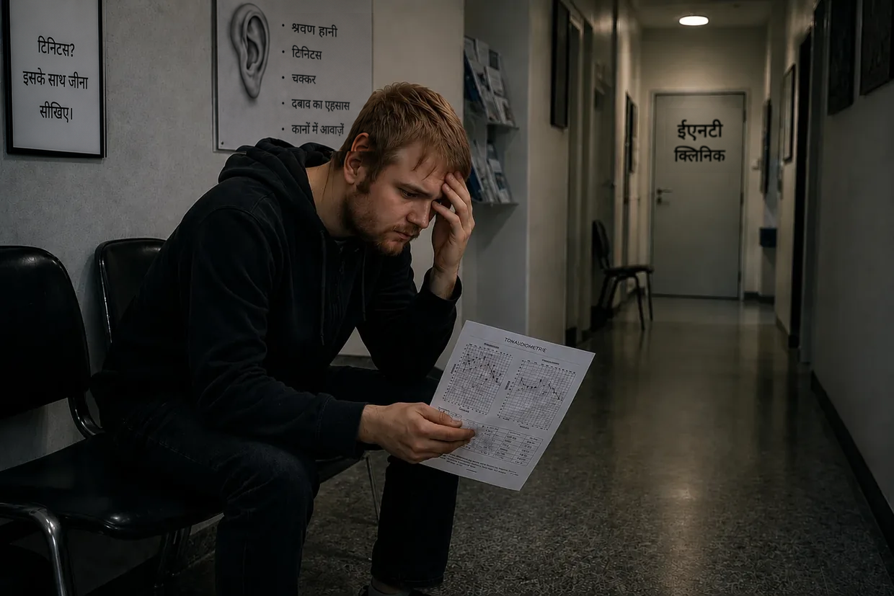
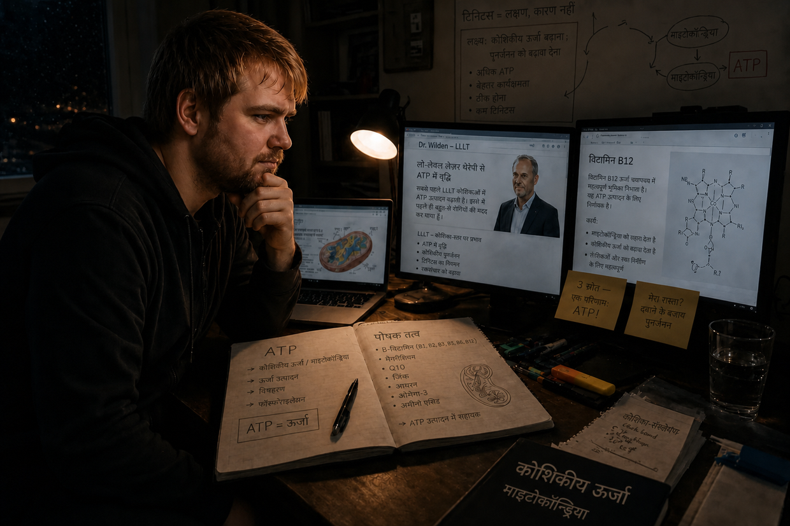

टिनिटस के नर्क में जाने का मेरा रास्ता — भाग 1: नर्क की यात्रा
नमस्ते, मेरा नाम Dustin Müller है। एक ऐसे व्यक्ति के रूप में जो इससे पहले प्रभावित रह चुका है (और वह भी कई बार), इस पृष्ठ को शुरू करना मेरे लिए बेहद गहरी ज़रूरत थी। अपनी वर्षों की रिसर्च, वास्तविक बायोहैकिंग प्रोटोकॉल और अपने अनुभवों के माध्यम से मैं दूसरे प्रभावित लोगों को दिखाना चाहता हूँ कि मैं व्यक्तिगत रूप से पूरी तरह ठीक होने तक कैसे पहुँचा। लेकिन इससे पहले कि हम इन तंत्रों की गहराई में उतरें, मुझे बताना होगा कि मेरे साथ यह सब आखिर शुरू कैसे हुआ। और वह कोई चिकित्सकीय संयोग नहीं, बल्कि सीधे सामने से हुआ क्रैश था।
क्या आप संक्षिप्त संस्करण ढूँढ रहे हैं? यह लंबा संस्करण हर बारीकी में जाता है — ऑडियोग्राम, ईएनटी डॉक्टर के पास की मुलाकातें और एक-एक निर्णायक सफलता। अगर आप इसे अधिक संक्षिप्त रूप में चाहते हैं, तो संक्षिप्त कहानी सही जगह है।
2011 की शरद ऋतु: अजेय शरीर और पहले से मौजूद बोझ
23 साल की उम्र में ऊर्जा का कोई अंत नहीं होता और लगता है कि शरीर सब कुछ झेल लेगा। अपने कानों के मामले में भी मेरी यही सोच थी। मुझे संगीत से प्यार था। सालों तक मैं हेडफ़ोन पर संगीत इतनी तेज़ आवाज़ में सुनता था कि मेरे माता-पिता उसे बंद कमरे के दरवाज़े के पार सुन सकते थे। मुझे पता भी नहीं था कि मेरा सिस्टम पहले ही “गलकर नरम” पड़ चुका था।
यह सब मेरे कज़िन की वजह से शुरू हुआ। चूँकि मैं पहले कभी सही मायने में किसी डिस्को में नहीं गया था, उसने कहा कि मुझे फ्रैंकफ़र्ट के U60311 में उसके साथ चलना चाहिए। मेरे मन में बेचैनी थी, फिर भी मैं मान गया। सीढ़ियाँ उतरते समय ही मैंने महसूस किया कि बास शारीरिक रूप से कितना क्रूर था। अंदर जाकर मैंने भोलेपन में वह जगह चुन ली जिसे मैं सबसे अच्छा समझ रहा था — विशाल स्पीकरों से लगभग 10 मीटर सीधे सामने, और मेरा बायाँ कान ठीक ध्वनि-स्रोत की ओर था। यही वह गलती थी जिसने पहला डोमिनो गिरा दिया।
अगली सुबह: भ्रामक शांति
हमारे पीछे दरवाज़ा बंद होते ही मुझे कानों पर पागल कर देने वाला दबाव महसूस हुआ — बाईं ओर बहुत ज़्यादा। हर आवाज़ दबी-दबी सुनाई दे रही थी, मानो मैं पानी के नीचे हूँ। मेरे कज़िन ने कहा कि यह सामान्य है और फिर चला जाएगा। मैं नशे में था, इसलिए बिस्तर पर जा गिरा। अगली सुबह उठने की कोशिश करते ही मैं धड़ाम से वापस तकिए पर जा गिरा — मेरा संतुलन-तंत्र चकनाचूर था और बाईं ओर खींचने वाला एक तीव्र यांत्रिक झुकाव था।
अपने शरीर की पुनर्जीवन-शक्ति पर मुझे बेहद गहरा, सहज भरोसा था, इसलिए मैंने इसे लगभग मज़ाक की तरह लिया: समय इसे खुद संभाल लेगा। और ऐसा ही लगने लगा: दिन 2 पर बाईं ओर का खिंचाव कम हुआ और दबाव का एहसास लगभग गायब हो गया। मैंने राहत की साँस ली — मुझे लगा कि मैं बच निकला हूँ।
दिन 3: राक्षस जाग उठता है
डिस्को के बाद दिन 3। मैं जागा और अचानक रेफ़्रिजरेटर की बीप जैसी आवाज़ सुनी। ये आखिर क्या बला है? मैंने अपना सिर दीवार से लगाया। बिजली के सॉकेट पर कान लगाकर सुना। कंप्यूटर और अलार्म घड़ी जाँची। कुछ नहीं। फिर मैंने अपने हाथों से कान ढक लिए।
ओह, शिट। यह मेरे भीतर से आ रहा है। यह मेरे सिर में है।
मैं मिनटों तक सदमे में खड़ा रहा। यह क्या है? क्या अब यह बना रहेगा? बाएँ कान में गहरी गुनगुनाहट, सरसराहट, सायरन की आवाज़ें और तेज़ बीप। दाएँ कान में भी मैं उस समय पहले से एक हल्की बीप सुन रहा था। सदमे के बावजूद मैंने सोचा: यह फिर चला जाएगा।
सॉफ़्टवेयर में ज़हर घुलना (14 दिन की समय-सीमा)
इंटरनेट पर मुझे कुछ ही मिनटों में जवाब मिल गए: अचानक सेंसरिन्यूरल श्रवण हानि (Hörsturz) और भीतरी कान की क्षति। सुनने की स्थायी कमी, अक्सर कानों में आवाज़ें। और फिर वह वाक्य, जिसने मेरी नसों में बहता खून जमा दिया: “इसका 14 दिनों के भीतर इलाज किया जाना ज़रूरी है — वरना पूरी समस्या क्रॉनिक हो जाती है और जीवन भर बनी रहती है।” tinnitus.de फ़ोरम में मैंने उन लोगों के थ्रेड पढ़े, जो 5 साल से इस चीज़ के साथ जी रहे थे। 5 साल? होली शिट। एक शारीरिक खराबी एक भीषण मनोवैज्ञानिक खतरे में बदल गई।
सफ़ेद लिबास में विश्वासघात (ईएनटी डॉक्टर से मेरी पहली मुलाकात)

मैं गाड़ी चलाकर अपने बचपन के ईएनटी डॉक्टर के पास गया। उम्मीद। बस अब मुक्ति मिलने वाली थी। मैंने उन्हें डिस्को जाने और अपने लक्षणों के बारे में बताया। वह पहले से थोड़ा झुँझलाए हुए थे: “हाँ, उस पर ध्यान मत दीजिए। इन टोन को ढकने के लिए थोड़ा संगीत सुनिए।” मैंने फिर पूछा: “लेकिन इसका 14 दिनों के भीतर इलाज करना ज़रूरी है, है न? और आगे भी कानों पर आवाज़ डालना क्या सचमुच समझदारी है?” उन्होंने कहा: “पहले हम एक ऑडियोमेट्री करते हैं।” इतना कहकर वह कमरे से निकल गए। मेरा भरोसा दरकने लगा।
खामोशी का आतंक (ऑडियोमेट्री)
ध्वनिरोधी केबिन में प्रवेश करते ही मुझे पहली बार एहसास हुआ कि मेरी सुनने की क्षमता को हुई क्षति वास्तव में कितनी गंभीर थी। इस पूर्ण खामोशी में हर प्राकृतिक मास्किंग हट गई — मेरे बाएँ कान की आवाज़ें अविश्वसनीय रूप से तेज़ थीं। परीक्षण के तीन हिस्से थे: टिनिटस की फ़्रीक्वेंसी और आवाज़ की तीव्रता तय करना, सामान्य सुनने की क्षमता मापना और खोपड़ी पर अस्थि-चालन।
फैसला
डॉक्टर ने रिपोर्ट हाथ में लेकर मुझसे कहा कि मेरी सुनने की क्षमता स्थायी रूप से क्षतिग्रस्त है और इसके बारे में कुछ नहीं किया जा सकता। सदमे में मैंने संभावनाओं के बारे में पूछा। वह फिर थोड़ा झुँझलाए: “आपको इसके साथ जीना सीखना होगा। उस पर ध्यान मत दीजिए, अपना ध्यान भटकाइए, हेडफ़ोन लगाइए।” मेरे इस बेतुके सवाल पर कि क्या मैं अब भी डिस्को जा सकता हूँ, उन्होंने कहा: “हाँ, उससे कोई समस्या नहीं होती।” इतना कहकर उन्होंने विदा ली।
कसम और घर वापसी
घर लौटने का रास्ता शुद्ध नर्क था। ज़ेंटनर जितना भारी बोझ। अपनी निराशा में एक पल के लिए मैंने सोचा: या तो मैं इसे दूर कर पाऊँगा, या फिर मैं अब और जीना नहीं चाहता। लेकिन घर पहुँचते ही अथाह दुख अचानक विद्रोही जिद में बदल गया। मैं मान ही नहीं सकता कि जर्मनी में कोई डॉक्टर नहीं जानता कि टिनिटस क्या है। मैंने अपनी मुट्ठियाँ भींच लीं:
“या तो टिनिटस जाएगा, या मैं जाऊँगा। मैं इस चीज़ को अपनी ज़िंदगी पर हावी नहीं होने दूँगा। मुझे खुद देखना होगा कि क्या किया जा सकता है।”
समाधान के तरीकों का वाइल्ड वेस्ट

मैंने खुद जानकारी जुटानी शुरू की और “थेरेपियों” की चकरा देने वाली भरमार सामने आ गई:
- कोर्टिसोन और जिन्कगो: रक्त-संचार बढ़ाने और सूजन कम करने वाले साधन — सुनने की क्षमता के वापस ठीक होने के लिए यह तर्कसंगत लगा।
- जबड़ा और गर्दन (CMD/HWS): ऐसी थ्योरी कि जकड़न इन आवाज़ों को पैदा करती है। लेकिन चूँकि मुझे टिनिटस निश्चित रूप से डिस्को के बास से हुआ था, मेरा बुलशिट-रडार सक्रिय हो गया।
- TRT और मास्किंग: टोन से इसे ढकना। वास्तव में इससे मैं टिनिटस को थोड़े समय के लिए कम कर सकता था — लेकिन जैसे ही मैं आवाज़ बंद करता, वह अधिक आक्रामक और अधिक तेज़ होकर लौटता। (आज मैं जानता हूँ: हर नई ध्वनि पहले से ही खाली हेयर सेल्स को काम करने पर मजबूर करती है — वे अपना आखिरी ATP खर्च कर देती हैं, जिसकी उन्हें असल में ठीक होने के लिए ज़रूरत होती।)
- पोषक सप्लीमेंट्स: मैं तब इन लोगों का मज़ाक उड़ाता था। क्या बेवकूफ़ लोग हैं, मैंने सोचा — वे उस चीज़ पर पैसे भी खर्च कर रहे थे जिसे मैं पूरी तरह बेकार समझता था। मैंने सपने में भी नहीं सोचा था कि बाद में ठीक इसी रास्ते — वास्तविक कोशिकीय ऊर्जा, ATP उत्पादन और सही पोषक तत्त्वों — के जरिए मैं अपने टिनिटस को मात दूँगा।
ईएनटी डॉक्टर से दूसरी मुलाकात: विनाशकारी सलाह
दूसरी ईएनटी मुलाकात की सुबह टिनिटस अचानक बहुत ज़्यादा तेज़ हो गया था — दाएँ कान में पहले से मौजूद हल्की बीप भी अब साफ़ तौर पर अधिक तेज़ थी। (आज मैं जानता हूँ: डॉक्टर की सलाह पर खुद को आगे भी संगीत और रात में सफ़ेद शोर सुनाते रहने से मेरी कोशिकाएँ फिर घुटनों पर आ गई थीं और दाएँ कान का पहले से मौजूद टोन तेज़ हो गया था।) दूसरे ईएनटी डॉक्टर दोस्ताना और हौसला बढ़ाने वाले थे। उन्होंने जिन्कगो लिखा और पर्याप्त नींद तथा व्यायाम की सलाह दी। हेडफ़ोन के सवाल पर उनका जवाब था: “ध्यान बँटाने के लिए तो यह फ़ायदेमंद भी है।” (आज की कोशिका-जीवविज्ञान संबंधी दृष्टि से यह बिल्कुल विनाशकारी सलाह थी।) 3 महीने बाद क्रॉनिक हो जाने के बारे में मेरे सवाल पर जवाब बस इतना था: “देखते हैं… इसे कंपेन्सेट करना, यानी पूरी तरह अनसुना करना भी सीखा जा सकता है।” वही आधा वाक्य फिर लौट आया था, जिसमें वास्तविक रूप से ठीक होने की कोई जगह नहीं थी।
धोखा देने वाला हम्स्टर-व्हील
इसी तरह दिन और हफ़्ते बीतते गए। दिन में स्कूल के कारण मेरा ध्यान बँटा रहता था। शाम को मैं धोखा देने वाले मास्किंग-चक्र में भाग जाता: हेडफ़ोन पर संगीत और झरने की आवाज़ें लगातार सुनना। इससे मैं स्थिति को थोड़ी देर के लिए सहने लायक बना पाता था। लेकिन जैविक स्तर पर मैं गोल-गोल घूम रहा था: आवाज़ों की इस पृष्ठभूमि से मैं अपने थके हुए कानों को लगातार तनाव में रख रहा था। मेरी कोशिकाएँ इस कृत्रिम शोर को प्रोसेस करने में अपना आखिरी ATP जला रही थीं, बजाय उसे भौतिक मरम्मत के लिए इस्तेमाल करने के। सिर्फ़ ज़िंदा रहने का मोड।
दूसरा क्रैश: हाइपरएक्यूसिस और वर्टिगो-सॉल्टो
एक सुबह बाएँ कान में अचानक फिर से बहुत तीव्र दबाव का एहसास हुआ। मैंने उसे नज़रअंदाज़ करने की कोशिश की और स्कूल के लिए निकल गया। क्योंकि मैं अब भी डॉक्टर की सलाह पर भरोसा कर रहा था, रास्ते में मैंने एक विनाशकारी गलती की: कार रेडियो पर अपना पसंदीदा गाना बहुत तेज़ बजाया। अगर मुझे अंदाज़ा होता कि उस स्कूल-दिन में आगे क्या मेरा इंतज़ार कर रहा है, तो मैं उसी जगह से वापस लौट जाता। चेतावनी-संकेत पहले ही मौजूद थे। लेकिन मैंने ऐसा नहीं किया: क्लास के पैसे लगे थे, इसलिए मैं गाड़ी आगे चलाता रहा। (यह तेज़ संगीत मेरी पूरी तरह थक चुकी कोशिकाओं के लिए बिल्कुल आखिरी बूँद था।)
पहले पीरियड में अचानक गंभीर श्रवण-विकृति और सामान्य आवाज़ों के प्रति दर्दनाक अति-संवेदनशीलता शुरू हो गई — हाइपरएक्यूसिस। (आज मैं जानता हूँ: मेरे कान के “शॉक एब्ज़ॉर्बर”, बाहरी हेयर सेल्स, अपना आखिरी ATP खर्च कर चुके थे।) अगले कुछ घंटों में बाएँ कान का दबाव लगातार और अधिक क्रूर होता गया। फिर यह हुआ: मेरे सामने का पूरा दृश्य लंबवत घूमने लगा — मानो सिर के भीतर आधी कलाबाज़ी लगी हो। दुनिया उलटी हो गई। कुछ सेकंड बाद दृष्टि सामान्य हो गई। जो बचा रहा: बहुत तेज़ डगमगाने वाला चक्कर, बाईं ओर ज़ोरदार खिंचाव और बाएँ कान से मंद तथा दबा-दबा सुनाई देना। (मेरे भीतरी कान में आयनों का पीछे की ओर जमाव इतना ज़बरदस्त हो गया था कि उसने पास वाले संतुलन-अंग में बाढ़ ला दी थी।)
दहशत से भरा हुआ मैं इसे सहने की कोशिश करता रहा। जैसे ही ब्रेक शुरू हुआ, मैं वहाँ से खिसक गया। घर तक गाड़ी चलाना लापरवाही भरा था — बेहद तेज़ चक्कर के कारण मुझे हर कुछ सेकंड में गाड़ी सँभालने के लिए विपरीत दिशा में स्टीयरिंग मोड़ना पड़ता था। लेकिन मैं बस किसी सुरक्षित जगह पहुँचना चाहता था। यह दूसरा पतन सबसे निर्णायक मोड़ था: मैं अब और बैठकर इसके बीतने का इंतज़ार नहीं कर सकता।
ईएनटी डॉक्टर 3 और 4: जवाबों की जगह गोलियाँ, फैंटम-झूठ और “साइको” का ठप्पा
उसी दिन मैंने तीसरे ईएनटी डॉक्टर से आपातकालीन अपॉइंटमेंट लिया। ऑडियोमेट्री, गंध की जाँच, “पोज़िशनल वर्टिगो” की एक जाँच — जिससे कुछ भी नहीं बदला। (आज यह साफ़ है: ढीले क्रिस्टल नहीं थे, बल्कि एंडोलिम्फ़ैटिक हाइड्रॉप्स था — ऐसे में सिर हिलाने से कुछ नहीं होता।) उनकी एक सहकर्मी ने ऊपर से निदान जोड़ दिया: “फिर से अचानक सेंसरिन्यूरल श्रवण हानि (Hörsturz), 14 दिनों में चली जाएगी” — या शायद बंद पड़े साइनस के कारण; महज़ लक्षणों पर अटकलें। फिर आया असली झटका: “देखिए, बहुत-से लोग डिप्रेशन में चले जाते हैं। अगर शिकायतें बनी रहीं, तो मैं आपको एंटीडिप्रेसेंट लिख दूँगा।” मैं वहाँ बैठा सोच रहा था कि शायद मैंने गलत सुना है। मेरा संतुलन-तंत्र ढह चुका था, और उनका समाधान था… मनोचिकित्सकीय दवाएँ? मैंने खुद से कसम खाई: कभी नहीं।
चौथे ईएनटी डॉक्टर — “विशेषज्ञ” — के सामने मैंने अपनी पूरी कहानी रख दी। कोशिकीय स्तर पर बात करने के बजाय उन्होंने बर्फ़ जैसे ठंडे स्वर में कहा: “क्या आपने कभी संज्ञानात्मक व्यवहार थेरेपी के बारे में सुना है? आपकी समस्या यह है कि आप अपनी सुनने की समस्याओं पर बहुत ज़्यादा ध्यान देते हैं और इस तरह टिनिटस को बनाए रखते हैं।” मैंने विरोध किया: “लेकिन यह आवाज़ तो डिस्को जाने से शारीरिक रूप से पैदा हुई थी!” उन्होंने कोई प्रतिक्रिया ही नहीं दी। कोर्टिसोन के सवाल पर जवाब मिला: “उसका केवल पहले 14 दिनों में ही कोई मतलब होता। आपके मामले में मानना पड़ेगा कि यह फैंटम ध्वनि है।” आखिर में उन्होंने फिर से विपरीत ध्वनियों वाली TRT की सलाह दी — और जब मैंने समझाया कि मास्किंग से मेरा टिनिटस केवल अधिक आक्रामक हुआ था, तो उन्होंने मेरी बात ही काट दी। व्यवस्था हथियार डाल चुकी थी और दोष मेरे सिर मढ़ चुकी थी।
सबसे निचला बिंदु: अलगाव और व्यवस्था की नाकामी
यह दुःस्वप्न मेरी अपनी जन्मदिन पार्टी में चरम पर पहुँचा (अचानक हुई सुनने की क्षति के डेढ़ महीने बाद)। हाइपरएक्यूसिस और श्रवण-विकृतियाँ मुझे पागल कर रही थीं। मेरा अपना टिनिटस इतना तेज़ था कि वह दूसरे लोगों की बातों को पूरी तरह ढक देता था। एक विचित्र घटना और जुड़ गई: अक्षरों की ध्वनि पहले से बिल्कुल अलग सुनाई देने लगी — “S” की आवाज़ “F” जैसी और “T” की आवाज़ “D” जैसी। मैं संवेदनाओं की इस बाढ़ को अब और नहीं सह पाया, अपना ही जन्मदिन बीच में समाप्त कर दिया और घर भाग गया। उसके बाद के दिनों में चक्कर इतना चरम हो गया कि कुछ-कुछ समय के लिए मेरे गिर पड़ने की नौबत आने लगी — लक्षणों का ऐसा समूह जो चिकित्सकीय रूप से “मॉर्बस मेनिएर” के अनुरूप है। मैं पूरी तरह अलग-थलग और दुनिया से कटा हुआ था। ज़िंदगी ने भी मुझे छोड़ दिया था और डॉक्टरों ने भी; उन्होंने मेरे दिमाग़ में बस यही ठूँसा था कि मेरा दिमाग़ पागल हो गया है और मुझे एंटीडिप्रेसेंट चाहिए।
पहला निर्णायक अनुभव: फैंटम-झूठ के विरुद्ध प्रमाण
सप्ताहांत के दौरान देर से मुझे संक्रमण के कारण कान की नली में सूजन हो गई — इसलिए मुझे मजबूरन खुद को घसीटकर यूनिवर्सिटी अस्पताल फ्रैंकफ़र्ट की इमरजेंसी में जाना पड़ा। ईएनटी डॉक्टर ने कानों की नलियों का एक के बाद एक सक्शन करने के लिए एक बहुत छोटा सक्शन उपकरण उठाया। और ठीक उसी पल सबसे निर्णायक अनुभव हुआ: जब बाएँ कान में तीखा शोर उग्र हो रहा था, उसी समय मैंने महसूस किया कि उसी कान का टिनिटस उस कर्कश शोर पर आक्रामक और विस्फोटक ढंग से प्रतिक्रिया कर रहा था। फिर दाएँ कान में: ठीक वही।
यह मेरे अपने शरीर पर एक बेहतरीन A/B परीक्षण था। मेरे दिमाग़ ने “विशेषज्ञ” की बातों को हवा में ही चीरकर रख दिया: कोई मनोवैज्ञानिक फैंटम ध्वनि संबंधित कान की नली में पूरी तरह यांत्रिक शोर-उत्तेजना पर उसी क्षण प्रतिक्रिया नहीं करती! यह प्रतिक्रिया मेरे लिए पूर्ण प्रमाण थी: दोषपूर्ण स्रोत अब भी वहीं नीचे, मेरे कान में मौजूद था। शोर पड़ते ही कोशिकाएँ मदद के लिए चीख उठती थीं।
कोर्टिसोन इन्फ्यूज़न और गॉज़-पट्टियों का चमत्कार
ईएनटी डॉक्टर ने यूँ ही पूछ लिया कि अचानक हुई सुनने की क्षति को कितना समय हो चुका था। दो महीने। ईएनटी डॉक्टर ने कहा कि क्योंकि मैं अब भी जादुई 3 महीने की समय-सीमा के भीतर था, कोर्टिसोन एक बार आज़माने लायक था। मैंने तुरंत हामी भर दी और रात भर वार्ड में रहा। अस्पताल के बिस्तर पर मैंने रिसर्च जारी रखी और टिनिटस से पीड़ित एक व्यक्ति की अपनी वेबसाइट पर पहुँचा। वहाँ जो पढ़ा, वह कोशिका-जीवविज्ञान के स्तर पर तार्किक था: अतिरिक्त शोर टिनिटस को बहुत अधिक बिगाड़ता है। साथ में Dr. Wilden और उनकी लो-लेवल लेज़र थेरेपी का लिंक था, जो कोशिकाओं में ATP उत्पादन को लक्षित रूप से उत्तेजित करती है। यह सक्शन वाले अनुभव से 100% मेल खाता था।
3 दिन बाद मुझे छुट्टी दे दी गई — कान की नली की सूजन के कारण दोनों कानों में मोटी गॉज़ पट्टियाँ लगी हुई थीं। इन्हीं दिनों में मैंने महसूस किया कि टिनिटस साफ़ तौर पर धीमा हो गया था! पहले मुझे लगा कि यह कोर्टिसोन के कारण है। लेकिन जब मैंने Dr. Wilden की वेबसाइट पर पढ़ा कि सक्रिय रूप से खामोशी तलाशना कितना बुनियादी रूप से महत्वपूर्ण है — तो मुझ पर बिजली-सी गिरी: मेरे कान कई दिनों तक गॉज़ पट्टियों से बहुत मज़बूती से बंद रहे थे! कोई सामान्य ईएनटी डॉक्टर मेरे कानों पर इस तरह इतनी कसकर बंद पट्टियाँ कभी नहीं बँधवाता। बिना चाहे मुझे प्रमाण मिल गया था कि पूर्ण खामोशी कुछ असर करती है।

धमाका, गतिशीलता और पूर्ण खामोशी का प्रोटोकॉल
कुछ दिन बाद एक और महत्वपूर्ण समझ आई। कान के ठीक पास क्रीम की छोटी बोतल इस्तेमाल करते समय अचानक बहुत तेज़ धमाका हुआ। सेकंड के अंश भर में मेरा टिनिटस चीख उठा — लेकिन बहुत ही कम समय में अपने “सामान्य” स्तर पर लौट आया। मेरे लिए बात शीशे की तरह साफ़ हो गई: मेरा टिनिटस कोई “स्थिर” चीज़ नहीं, बल्कि बेहद गतिशील था! उसने शोर पर उसी क्षण बिगड़कर प्रतिक्रिया दी — और जब मैं लगातार खामोशी तलाशता था, तो कम हो जाता था।
मैंने बेहद कठोर नतीजे निकाले। अब से मैं जान-बूझकर जितना संभव हो उतना समय पूरी खामोशी में बिताने लगा। संगीत, फिल्में और दोस्तों से मिलना रोज़मर्रा की चीज़ों से बदलकर दुर्लभ “इनाम” हो गए — और अगर कभी ऐसा करता, तो बिल्कुल बिना हेडफ़ोन, बहुत धीमी आवाज़ में और बहुत थोड़े समय के लिए।
छह महीने की खामोशी — और 25% पर ठहराव
वास्तव में टिनिटस महीने-दर-महीने कम होता गया। पीछे मुड़कर देखूँ तो करीब 8 महीने बाद आवाज़ की तीव्रता लगभग एक-चौथाई कम थी। हालाँकि स्वाभाविक रूप से मैं इस पूर्ण खामोशी को 100% बेदाग़ तरीके से बनाए नहीं रख सका — यहाँ तक कि ज़रूरी कार यात्राएँ (200 km जाना और वापस लौटना) भी टिनिटस को फिर उसी तेज़ स्तर पर ले आती थीं। मानो मैंने पूरा एक हफ़्ता “बेकार” अपने कानों को बचाकर रखा था।
फिर एक निराश करने वाली बात हुई: लगभग 20–25% सुधार पर ठीक होने की प्रक्रिया अचानक रुक गई। मैंने अपने अलगाव को चरम पर पहुँचा दिया — बातचीत से बचा, लगातार इयरप्लग पहने और यहाँ तक कि टिक-टिक करती दीवार घड़ी को भी अपने कमरे से निर्वासित कर दिया। लेकिन फिर कुछ नहीं हुआ। शून्य।
एटलस सुधार, CMD और HWS — बंद रास्ता
तभी मेरे मन में जबड़े, HWS और टिनिटस का फिर से गहराई से अध्ययन करने का विचार आया। मुझे CMD (क्रैनियोमैंडिबुलर डिसफंक्शन) के बारे में पता चला और दंत चिकित्सक से एक बाइट स्प्लिंट मिला। एक ऑर्थोपेडिक केंद्र में HWS सिंड्रोम का पता लगाया गया और शक्ति-प्रशिक्षण (Med X) लिखा गया। मैंने दोनों को फौलादी अनुशासन से निभाया और साथ-साथ खामोशी जारी रखी। 2 महीने बाद मोहभंग हुआ: CMD और HWS की तकलीफ़ों में सुधार हुआ — लेकिन टिनिटस में बिल्कुल कुछ भी नहीं बदला।
आख़िरी तिनका: एटलस सुधार। मैं 200 km दूर एक Heilpraktiker के पास गया, जिन्होंने एक विशेष उपकरण और हाथों की तकनीकों से मेरे टेढ़े एटलस को फिर सही स्थिति में रखा। हफ़्तों बाद भी उससे कुछ हासिल नहीं हुआ — कुछ भी नहीं। एकमात्र अतिरिक्त नतीजा यह था कि Heilpraktiker ने मेरी क्रॉनिक गैस्ट्राइटिस के लिए इसबगोल की भूसी, खनिज मिट्टी का मिश्रण और प्रोबायोटिक्स सुझाए। और सचमुच: मेरे पेट की अंदरूनी परत में लगभग एक साल से बनी हुई जिद्दी सूजन गायब हो गई। इससे मैं प्रभावित हुआ — मुख्यधारा की चिकित्सा नाकाम हुई थी, Heilpraktiker ने करके दिखाया था।
विटामिन B12 — सबसे महत्वपूर्ण (आकस्मिक) निर्णायक अनुभव
मेरे पिता उस समय पॉलीन्यूरोपैथी से पीड़ित थे। उनके फैमिली डॉक्टर ने विटामिन B12 की गंभीर कमी का निदान किया और इंजेक्शन लिखे। जब एक शाम उन्होंने मेरी आँखों के ठीक सामने खुद को एक एम्प्यूल का इंजेक्शन लगाया, तो थोड़ी देर बाद उन्होंने कहा: दर्द कम हो गया था, शरीर में फिर से गर्मी महसूस हो रही थी। इतनी छोटी-सी लाल एम्प्यूल ने इतना प्रत्यक्ष शारीरिक असर किया?
मैंने रिसर्च की और पढ़ा: B12 तंत्रिकाओं के लिए प्रमुख विटामिन है। शाकाहारियों (मैं 15 साल की उम्र से शाकाहारी था!) और क्रॉनिक गैस्ट्राइटिस के मरीजों (मेरी गैस्ट्राइटिस हाल ही में कम हुई थी) में B12 की कमी का जोखिम विशेष रूप से अधिक होता है। मैंने फैमिली डॉक्टर से रक्त-जाँच कराई: कमी की पुष्टि हुई, मान सामान्य सीमा के बिल्कुल निचले हिस्से में था। लेकिन डॉक्टर ने इंजेक्शन देने से इनकार कर दिया — “अभी सामान्य सीमा में है।” मैं मायूस होकर क्लिनिक से बाहर निकला।
जब शाम को मेरे पिता को अगला B12 इंजेक्शन लगाना था, मैंने हिम्मत जुटाई और खुद भी उनसे एक लगवा लिया। महत्वपूर्ण: मैं स्पष्ट रूप से सलाह देता हूँ कि डॉक्टर की देखरेख के बिना ऐसा न दोहराएँ। वाह — कुछ ही मिनटों में मैंने बेहतर रक्तसंचार, सुखद गर्माहट और अधिक साफ़ दिमाग़ महसूस किया। मैं सुकून से सोने चला गया।
अगली सुबह: पूर्ण चमत्कार। जागने के कुछ ही सेकंड बाद मैंने इसे तुरंत महसूस कर लिया — टिनिटस बहुत ज़्यादा कम हो गया था! 25% सुधार से अचानक 40% से थोड़ा अधिक सुधार। मैं अवाक पड़ा था, आँसू आने ही वाले थे। दिन के दौरान वह फिर बिगड़ा ज़रूर — लेकिन पुराने स्तर तक नहीं। और अगली सुबह फिर: 40%।
Dr. Wilden की वेबसाइट पर मैंने पढ़ा कि उनका लेज़र कोशिकाओं में ATP उत्पादन को लक्षित रूप से उत्तेजित करता है। और B12 ठीक इसी ATP उत्पादन के लिए आवश्यक है। क्लिक! शायद मुझे महँगे लेज़र की ज़रूरत ही न पड़े — मैं लक्षित पोषक तत्वों के ज़रिए ATP बढ़ा सकता हूँ।
पित्त-शूल और लेसिथिन का चमत्कार (मेरा उस समय का माइलिन मॉडल)
जब मैं अमेरिका से ऊँची खुराक वाले मल्टीविटामिन उत्पादों का इंतज़ार कर रहा था, अगली तबाही ने मुझे आ घेरा: पित्त की पथरियों के कारण पित्त-शूल। रात की इमरजेंसी में महिला डॉक्टर ने मुझे सिर्फ़ ऑपरेशन का विकल्प दिया — पित्ताशय निकाल देना। मैंने इनकार कर दिया और अपने जोखिम पर घर लौट आया।
इंटरनेट पर फिर रिसर्च: एक पीड़ित व्यक्ति ने बताया कि महीनों तक लेसिथिन ग्रैन्यूल्स लेने से उसकी पित्त की पथरियाँ पूरी तरह घुल गई थीं। मैं अगले ही दिन इसे ले आया, 30 g लिया और वास्तव में महसूस किया कि पेट के ऊपरी दाएँ हिस्से में दबाव कम होने लगा। महत्वपूर्ण: पित्त की पथरी होने पर चिकित्सकीय देखरेख ज़रूर लें — यहाँ मैं किसी तीव्र स्थिति में अपना बिल्कुल निजी अनुभव बता रहा हूँ, दूसरों के लिए इलाज की सलाह नहीं।
लेकिन असली बड़ी बात 3 दिन बाद हुई: B12 इंजेक्शन + लेसिथिन ग्रैन्यूल्स के बाद फिर एक चमत्कार हुआ। अगले दिन: शुरुआती स्थिति की तुलना में 60–65% सुधार! महीनों के ठहराव के बाद। मैंने रिसर्च की और उस समय अपने लिए यह मॉडल बनाया: लेसिथिन माइलिन परत (तंत्रिका-इन्सुलेशन) की एक केंद्रीय निर्माण-सामग्री है। रिसर्च के अनुसार शोर के कारण होने वाले टिनिटस में ठीक यही इन्सुलेशन क्षतिग्रस्त होता है: “मानो पतले बिजली के तार की प्लास्टिक सुरक्षा नष्ट हो गई हो।” और उस समय मैंने पढ़ा था कि माइलिन आवरण के पुनर्निर्माण के लिए B12 सबसे महत्वपूर्ण विटामिन है। अरे बाप रे — तो मुझे सिर्फ़ ATP नहीं, निर्माण-सामग्री भी चाहिए! आज मैं इस तंत्र को लेकर अपनी सोच अधिक खुली रखता हूँ: श्रवण तंत्रिका या माइलिन की भागीदारी को मैं अब भी संभव मानता हूँ, लेकिन अपने मामले में उसे निश्चित रूप से साबित नहीं कर सकता। एक अप्रत्यक्ष रास्ता भी संभव है: लेसिथिन से मिलने वाला कोलीन एसिटाइलकोलीन के लिए निर्माण-सामग्री का काम कर सकता है और उसके ज़रिए पैरासिम्पेथेटिक तंत्रिका तंत्र, गहरी नींद और पुनर्बहाली को सहारा दे सकता है — या हो सकता है कि लेसिथिन ने कोशिकाओं की मरम्मत को एक साथ कई रास्तों से तेज़ किया हो। शायद दोनों बातें साथ आईं।
80% सुधार तक की निर्णायक सफलता (B-कॉम्प्लेक्स बाइपास)
लेसिथिन, मल्टीविटामिन उत्पाद और B12 इंजेक्शनों के साथ ठीक होने की प्रक्रिया आगे बढ़ी — लेकिन टिनिटस लगभग 70% सुधार पर आकर रुक गया। मेरा संदेह: बाकी B विटामिन पर्याप्त मात्रा में अवशोषित नहीं हो रहे थे। मैंने B1 और B2 एम्प्यूल में तथा B3, B5 और B8 ऊँची खुराक वाली गोलियों के रूप में लिए। और येस, येस, येस: हर सप्ताह थोड़ी और कमी! डिस्को के 16–17वें महीने में टिनिटस सचमुच सिर्फ़ 20% बचा था (यानी 80% सुधार)। लेकिन फिर वही: ठहराव।
अंतिम रूप से ठीक होना: कोशिकाओं की “कार्पेट बॉम्बिंग”
मैंने जुनून की हद तक रिसर्च की और उस समय इस निष्कर्ष पर पहुँचा: B12 और लेसिथिन तक सीमित मेरी सोच बहुत छोटी थी। मेरे अनुमान वाली माइलिन-मरम्मत और अन्य कोशिकीय निर्माण प्रक्रियाओं के लिए शरीर को दूसरे पोषक तत्वों की एक पूरी श्रृंखला चाहिए थी — ओमेगा-3 (DHA/EPA), अमीनो एसिड, विटामिन C, वसा में घुलनशील विटामिन A/D/E/K और खनिज पदार्थ। मैंने सचमुच खुद पर इनकी बौछार कर दी: हफ़्ते में 2 बार B-विटामिन इंजेक्शन, हफ़्ते में 3–4 बार 30 g लेसिथिन, रोज़ अमीनो एसिड पाउडर, 3 g ओमेगा-3, ऊँची खुराक वाला विटामिन C, Life Extension का खनिज-मिश्रण, NOW Foods का मैग्नीशियम और जिंक, रोज़ एक गिलास LaVita और साथ में Dr. Rath की मल्टीविटामिन गोलियाँ। एक ऑर्थोमॉलिक्यूलर “कार्पेट बॉम्बिंग”।
फ़ेड-आउट और दुःस्वप्न का अंत (100% ठीक होना)
पोषक तत्वों के पूरे स्टैक के साथ स्थिति की गतिशीलता निर्णायक रूप से बदल गई। मेरे उस समय के मॉडल के अनुसार अब मेरे शरीर के पास ATP ऊर्जा और निर्माण-सामग्री की पूरी श्रृंखला — दोनों थीं। मोंक-मोड के साथ वह आखिरकार ठीक से काम कर सकता था। आज मैं बेहतर ऊर्जा-आपूर्ति को मुख्य लीवर मानता हूँ; साथ ही पोषक तत्वों ने महत्वपूर्ण कोफ़ैक्टर्स और निर्माण-सामग्री दी, और हो सकता है कि उन्होंने इस प्रक्रिया को और तेज़ किया हो। बिल्कुल शुरुआत की तरह: सुबह नींद के कारण कोशिकीय बैटरी पूरी तरह चार्ज होती थी — सबसे अच्छी स्थिति। शाम को दिनभर की थकान के कारण टिनिटस फिर तेज़ हो जाता था। लेकिन खामोशी दिन में लगातार और गहराई तक अपनी जगह बनाती चली गई: पहले टोन दोपहर तक गायब रहता था। फिर दोपहर बाद तक। शाम की गिरावटें लगातार कमज़ोर और छोटी होती गईं।
और फिर वह एक आखिरी सुबह आई — मैं उसे कभी नहीं भूलूँगा। जागते ही सेकंड के एक अंश में मैंने महसूस किया: मेरे सिर में कुछ अलग लग रहा है। धड़कते दिल के साथ — क्रिसमस पर किसी बच्चे की तरह उत्साहित — मैंने इयरप्लग अपने कानों में गहराई तक दबाए। मैंने ध्यान से सुना… और वहाँ बिल्कुल कुछ भी नहीं था।
डिमर स्विच हमेशा के लिए शून्य पर आ गया था। सुबह, दोपहर, शाम — कुछ भी नहीं। सिर्फ़ वह प्राकृतिक, शांत खामोशी, जिसका मैंने लगभग दो साल से अनुभव नहीं किया था। टिनिटस जा चुका था। पूरी तरह गायब।
यह एहसास बयान से बाहर था। परम राहत और पूर्ण तसल्ली का एक गहरा, गर्माहट भरा एहसास। मैं जीत गया था: मैंने हार नहीं मानी थी, “इसके साथ जीना सीखिए” कहने वाले डॉक्टरों पर विजय पाई थी और अंत में महँगे लेज़र की भी ज़रूरत नहीं पड़ी थी। मेरे शरीर ने इसे खुद ठीक किया था — नतीजा वास्तविक था: टिनिटस पूरी तरह गायब हो गया था। उस समय मैंने इस तंत्र को इस तरह समझाया था: माइलिन परत फिर से बन चुकी थी, हेयर सेल्स का एक्टिन ढाँचा फिर खड़ा था, ढीला संपर्क ठीक हो गया था और मस्तिष्क ने आपातकालीन एम्प्लीफ़ायर — सेंट्रल गेन (Central Gain) — बंद कर दिया था। आज मैं ऊर्जा-आपूर्ति को कोशिकीय पुनर्बहाली का मुख्य लीवर मानता हूँ; मेरा ध्यान मुख्यतः हेयर सेल्स, उनके स्टीरियोसिलिया (stereocilia) और कोशिका झिल्लियों पर है। माइलिन या श्रवण तंत्रिका की भागीदारी को मैं अब भी संभव मानता हूँ, लेकिन अपने मामले में उसे निश्चित रूप से साबित नहीं कर सकता। जीवविज्ञान जीत गया था।
उस सुबह मैं यह नहीं जानता था कि कई महीने बाद एक अलग, विनाशकारी शृंखलाबद्ध प्रतिक्रिया के कारण मेरा शरीर सबसे गंभीर क्रॉनिक फ़टीग सिंड्रोम (CFS) में जा गिरने वाला था। लेकिन यह ज्ञान — कि इंसान खुद “लाइलाज” को भी ठीक कर सकता है — मैं अगले नर्क में अपने साथ ले गया।
कहानी यहाँ अभी खत्म नहीं हुई थी। पहली जीत के बाद जो आया, वही असली कठिन परीक्षा थी — और जान-बूझकर किया गया वह पागलपन भरा प्रमाण कि मेरा जैविक मॉडल सचमुच काम करता है।